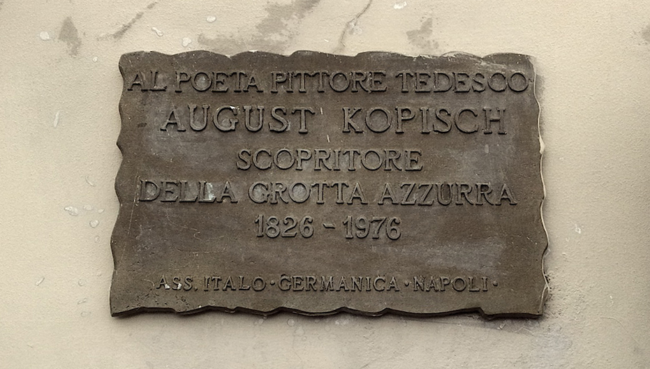

There are many ways to remember an artist. The authorities of the Island of Capri have done something quite creative when they decided to celebrate the German poet and painter August Kopisch, the discoverer of the famous blue grotto of Capri. An imposing bronze plaque, signed by the Italo-German Association of Naples, is present in the square at the entrance of Capri.
The dedication is straightforward: to the german poet August Kopisch, discoverer of the Blue Grotto; so far so good; and then it gets interesting with two dates: 1826 - 1976.
Now, the most obvious interpretation is to be excluded: it is unlikely that Kopisch lived for 150 years. And one must turn to sources to understand the hidden meaning of the plaque: Kopisch was born in 1799 and died in 1853; but those two dates are there to indicate the time of the discovery of the Blue Grotto (1826) and the dedication of the plaque (1976), on the 150th anniversary. If it has been a deliberate decision to set in bronze such a plaque, to some extent it achieved its purpose.